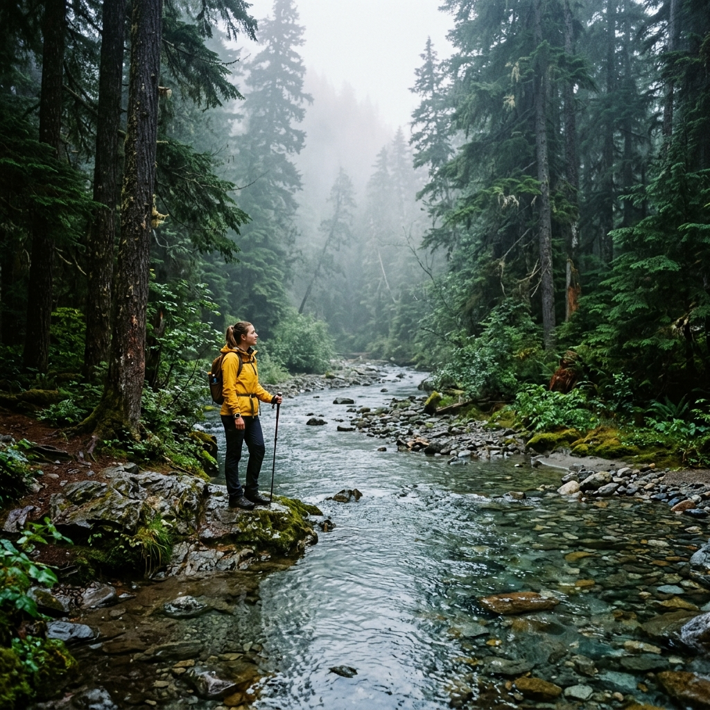

⭐ Popular Kerala Tour Combinations

Munnar – Thekkady – Alleppey
Tea garden hills of Munnar, wildlife boat safari in Thekkady, and luxury backwater houseboat cruise in Alleppey.

Munnar – Alleppey – Kochi
Munnar hill greenery, Alleppey backwaters, and heritage Fort Kochi Chinese fishing nets with Mattancherry palace.

Kochi – Munnar – Vagamon
Historic Kochi city tour, misty Munnar tea hills, and tranquil pine forest meadows of Vagamon hill station.
Wayanad – Kozhikode
Banasura dam, Edakkal caves, Chembra heart lake trek in Wayanad, plus Malabar cuisine and Kozhikode beach sunset.

Trivandrum – Kovalam – Varkala
Padmanabhaswamy temple in Trivandrum, Kovalam lighthouse beach, Poovar island, and cliff-side Varkala sunsets.

Kasaragod – Kannur – Wayanad
Bekal Fort ocean views, Muzhappilangad drive-in beach, St. Angelo Fort, and Wayanad forest spice sanctuaries.
⭐ Popular Tamil Nadu Tour Combinations

Ooty – Coonoor Hill Station Tour
Nilgiri mountain railway ride, Doddabetta peak, Botanical garden, Sim's park Coonoor, and tea factory tour.

Kodaikanal – Munnar Twin Hills
Combine Kodaikanal star lake and pillar rocks with Munnar tea garden mountains in a seamless hill country tour.

Madurai – Rameswaram – Kanyakumari
Meenakshi Amman temple darshan, Ramanathaswamy temple, Pamban bridge, Dhanushkodi, and Vivekananda Rock memorial.

Chennai – Mahabalipuram – Pondicherry
Marina beach, UNESCO Shore Temple Mahabalipuram, French Quarter Pondicherry, Auroville, and Paradise beach.

Thanjavur – Kumbakonam – Trichy
Brihadeeswarar Temple UNESCO monument, Mahamaham tank Kumbakonam, Trichy Rockfort & Srirangam temple.

Valparai – Pollachi – Coimbatore
Scenic hairpin curves, tea estates, Sholayar dam, Aliyar dam, Monkey falls, and Anamalai tiger reserve trails.